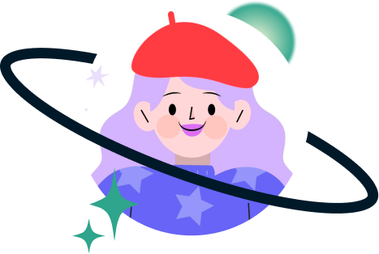
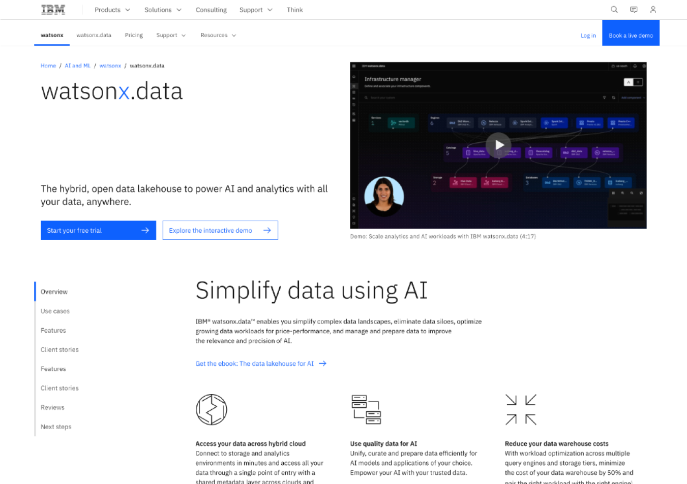
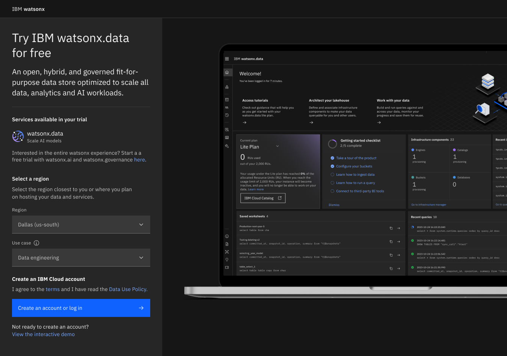
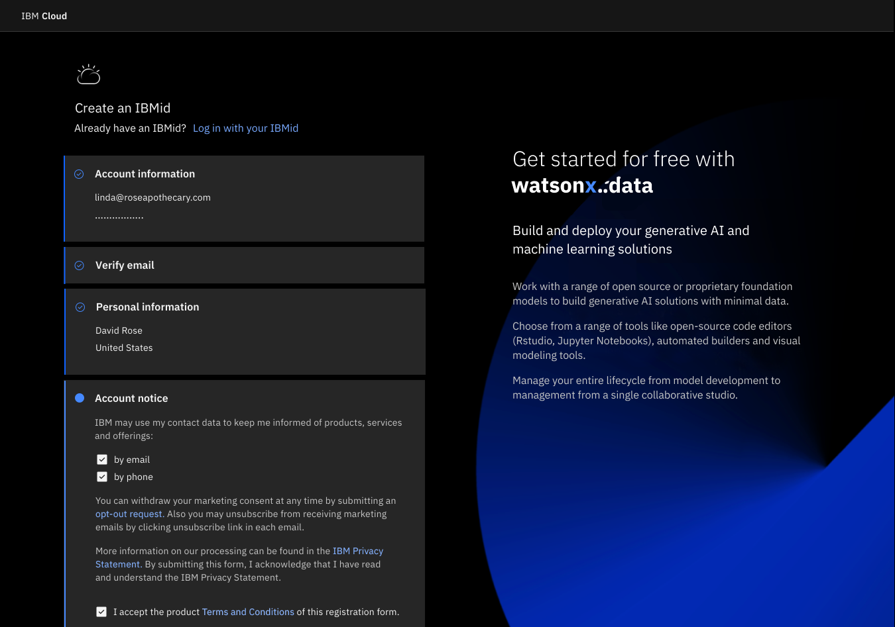
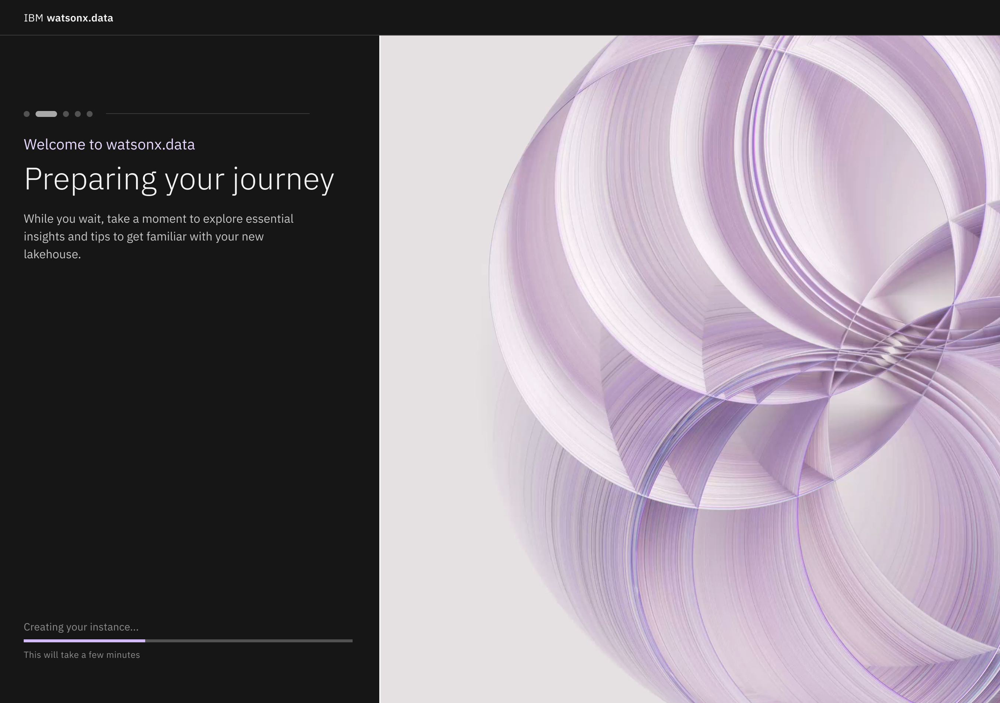
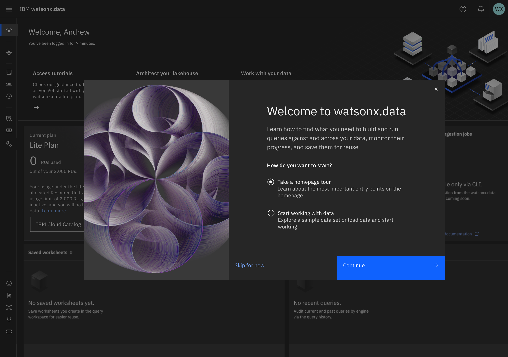
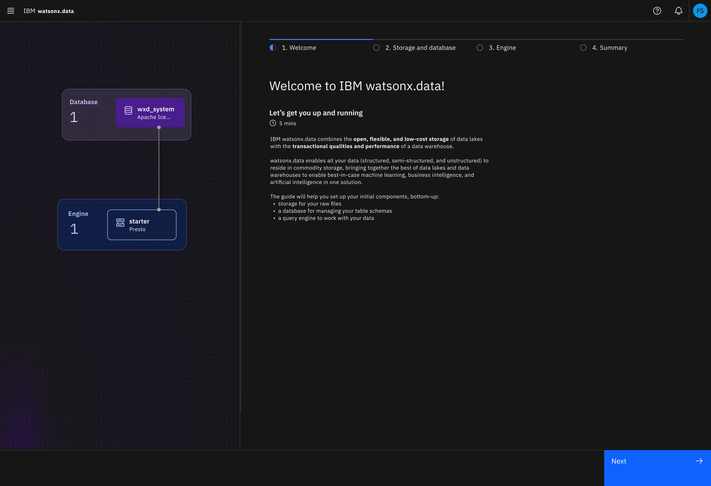
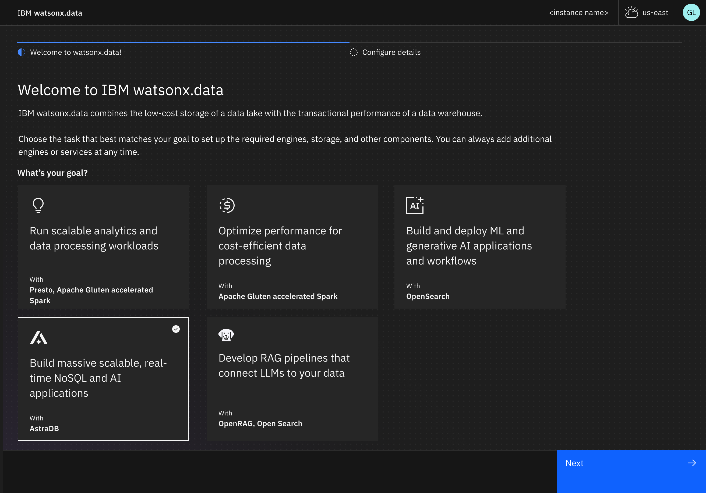

Redesigning the first-run experience for an open data lakehouse, turning a slow, multi-screen provisioning flow into something a user can get through in about a minute.
watsonx.data is IBM's open data lakehouse, part of the watsonx family alongside watsonx.ai and watsonx.gov, under Data & AI. It's built to scale workloads and analytics across all your data, wherever it lives.
A data lake stores raw, diverse data cheaply. A data warehouse keeps structured data fast and report-ready. A lakehouse is the hybrid: the flexibility of a lake with the performance of a warehouse, so teams can query data where it sits.
It lives in IBM's Hybrid Data Management portfolio, and my focus there was product-led growth, the experience a user has when they first try the product, on their own, without a sales call.

Data engineers make sure data is accessible to the right people in the right place, moving data to a central location, providing high-quality transformed data for business use, and keeping governance intact along the way.
People like Sue need somewhere to actually work with all that data: a lake, a warehouse, or a lakehouse. watsonx.data is meant to be that place. But first, she has to get in the door.
Before Sue could do anything useful, simply getting watsonx.data provisioned was a slog. The path wound through the marketing site, account creation, the IBM Cloud console, a catalog search, a plan picker, and a resource list, then ended in a long wait.
All told: roughly 10 screens and 9 clicks before the product did anything, capped by a 15-minute provisioning wait staring at a blank loading screen. For a self-serve trial, that's where users quietly give up.
"There are too many screens to provision watsonx.data. Simplify the path and cut provisioning time in half."
The redesign collapsed the path and removed the dead time, and where waiting was unavoidable, it turned that wait into something useful.
Instead of scattering setup across the console and catalog, a single provisioning page lets the user pick a use case (like data engineering) that bundles the right engines for them. Choosing the use case up front is the key lever that cuts the bulk of the provisioning time.
An "engine" is the compute that actually runs the work, the thing that queries and processes the data. Different jobs want different engines, which is exactly the choice we wanted to make easy.
The same provisioning page is shared by watsonx.ai and watsonx.gov, so the experience is consistent across the whole watsonx family, so a user who knows one knows them all.
When provisioning does take a moment, an educational "preparing your journey" screen teaches key parts of the lakehouse while the user waits, turning dead time into onboarding instead of a frozen progress bar.
Rather than dropping the user into a bare console, a welcome modal offers two doors: take a quick product tour, or jump straight into sample data and start working.





One thing I learned over two years on this: the trial and paid experiences aren't the same problem. In a trial, nobody's committed yet, so every extra step is a reason to leave, and friction is the enemy. In the paid experience the user is being billed, so the goal flips. Now they want control over what they're spinning up and paying for. Same product, opposite priorities.
We provision a sensible set of engines automatically. This moved past even the use-case selection in the original redesign, since the fastest path is no setup at all. A trial user lands in a working environment and can start exploring right away.
Because they'll be billed, the user picks a use case and we provision the recommended engines for them. The old Quick Start wizard dropped from five steps to two, and the homepage now makes the right first step obvious, with a path to learn the tools for anyone using them for the first time.


A faster, simpler first run didn't just feel better. It showed up in the funnel.
Underneath those outcomes, the redesign made the path itself dramatically shorter:
Beyond the numbers, the work delivered a better getting-started experience and tighter consistency across the watsonx products.
No user ever needs to see the behind-the-scenes of design. Underneath this simple flow sat detailed user-flow charts to capture the architecture's nuances, careful design handoff to development, and playback to leadership to keep everyone aligned.
At the core, I'm a designer who cares about the humane side of both the process and the result, and a safe environment for the team doing the work.